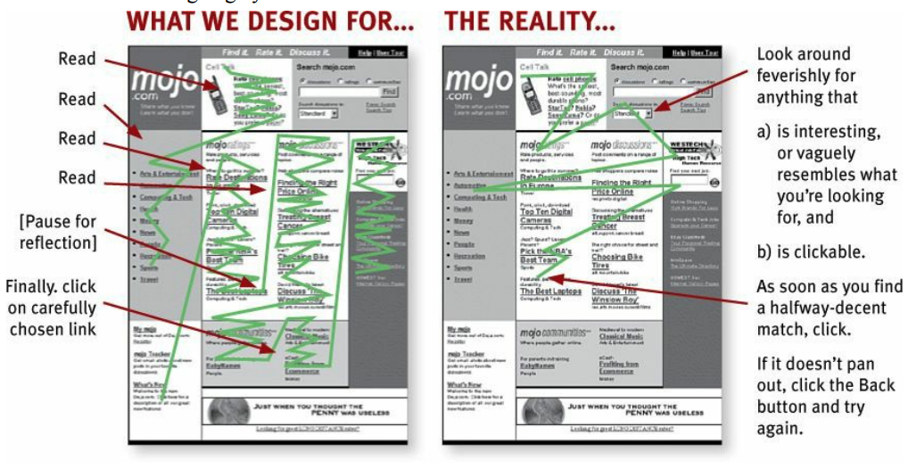

Chapter 6 UX Matters
We have a natural tendency, as R-coders, to be focused on the back-end, i.e the server part of the application17. Which is perfectly normal—chances are you didn’t come to R to design front-ends.18 But let’s state the truth: no matter how complex and innovative your backend is, your application is bad if your User Experience (UX) is bad. That’s the hard truth. If people can’t understand how to use your application, your application isn’t successful, no matter how incredible the backend is. This natural taste for back-end / server logic can deserve you on the long run: by neglecting the UI and the UX, you’ll make your application less likely to be adopted among your users. Which is a good way to fail your application project.
6.1 Simplicity is Gold
“Simplify, then add lightness”
Colin Chapman CBE, Founder of Lotus Cars
There are mainly two contexts where you’ll be building a web app with R: one for professional use (i.e people will rely on this app to do their job), or for fun (i.e people will just use the app as a distraction). But in both cases, people will want the app to be useable, and easily usable.
If people use your app in a professional context, they don’t want to fight with your interface, read complexe manuals, or lose time understanding what they are supposed to do and how they are supposed to use your application. In other words, they want an efficient tool: something that, beyond being accurate, is easy to grasp. In a professional context, when it comes to “Business applications”, remember that the eaasier the learning curve the better the user experience. Think about all the professional applications and softwares that you’ve been ranting about during your professional life, all these cranky user interfaces you haven’t understand and/or you need to relearn every time you use them. You don’t want your app to be one of these applications.
And on the other end, if users open your app for fun, they are not going to fight your app into submission: they are just going to give up if it’s too complex to be used. Even a game has to appear easy to use when the users open it.
Aiming for simplicity is a hard thing, but following some rules will help you start on a solid ground. In this section, we’ll review two general principals: the “don’t make me think” principle, which states that interfaces should be as self-explanatory as possible, and the “Rule of least surprise”, stating that elements should behave the way they are commonly expected to behave. These two rules aim at solving one issue: the bigger the cognitive load of your app is, the harder it will be for the end-user to use your app on a daily basis. And of course, the less a success your project will be.
6.1.1 How we read the web: scanning content
One big lie we tell ourselves as developer is that end-user will use the app the way we designed it to be used. We love to think that when faced to our app, the users will carefully read the instructions, make a rational decision based on careful examination of the inputs, before doing what we expect them to do. But the harsh truth is that it’s not how what happens.
First of all, user rarely read carrefully all the instructions: they scan, and perform the first action that more or less match what they need to do, i.e the satisfice.

FROM ‘Don’t make me think’, Steve Krug
For example, let’s have a look at the user interface of hexmake, a Shiny app for building hex stickers, available at https://connect.thinkr.fr/hexmake/

What will be your reading pattern for this application? What is the first thing you’ll do when using this app?
There is an inherent logic in the application: each submenu is designed to handle one specific part of your sticker. The last-but-one menu is the one used to download the sticker, and the last one the menu to open the “how to” of the app. When opening this app, will your fist move be to open the how to? Will you open all the sub-menu and select the most “logical” one to start with? Chances are that reading this line, you think you’ll do that. But in reality, we behave less rationally that we’d like to think. What we most of the time do is click on the first thing that matches what we are here to do. For example, most of the time we will first change the package name, or upload an image, before even opening the about section of this app.
Once user have scanned the page, they perform the first action that seems reasonable. Or as coined in “Rational Choice and the Structure of the Environment” by Herbert A. Simon, " organisms adapt well enough to “satisfice”; they do not, in general, “optimize.”“. In other words, ”As soon as we find a link that seems like it might lead to what we’re looking for, there’s a very good chance that we’ll click it" (’Don’t make me think’, Steve Krug).
What that also means is that user might perform what you’d expect to be “irrational” choices. As they are scanning your webpage, they might do something unexpected, or use a part of your app in a way that you wouldn’t expect it to be used. For example, if you are creating an app that is designed to take as input data that comes under a specific form, you need to check that this requirement is fulfill, or you’ll end up debugging errors on uncommon datasets. This is a pretty common thing about apps and about software in general: you have to expect users to use your product in ways you wouldn’t have expect, in way that might seem absurd to you.
For example, consider this small app:
library(shiny)
ui <- function(request){
tagList(
selectInput(
"species",
"Choose one or more species",
choices = unique(iris$Species),
multiple = TRUE,
selected = unique(iris$Species)[1]
),
plotOutput("plt")
)
}
server <- function(
input,
output,
session
){
output$plt <- renderPlot({
plot(
iris[ iris$Species %in% input$species, ]
)
})
}
shinyApp(ui, server)What’s wrong with this app? Probably nothing from a developer point of view: there’s a label explciting that one should select one or more element from the dropdown, and then something is plotted.
Pretty standard.
But what happen if the dropdown is empty?
Our first conception would be that this would never happen, as it’s explicitely specified that there should be one or more elements selected.
In fact, chances are that even with this label, users will eventually end up with an empty selectInput, leading to the printing of an error where the plot should be.
What should we do? Adopt a defensive programming mindset. Everytime you create interactive elements, inputs and outputs, or things the user might interact with, ask yourself: “what if [that crazy thing] happens? How do I handle the case where the minimal viable requirements for my app are not met?”. And in fact, you shouldn’t be focusing on that only for the user side: the backend should also be examined for potentential unexpected behavior. For example, if your Shiny app relies on a database connection, you should check gracefully that the connection is possible, and if it’s not, send a message to your user that the database is not reachable, and that they should either restart the app or come back in a few minutes.
In fact, this is a crucial thing when it comes to making your app successful: you should always fail gracefully and informatively. That means that when your R code fails, the whole app shouldn’t fail. If the R code fails for some reason, the user should get back either nothing or an informative bug message, not be faced with a grey page over the application. Because of the way Shiny is designed, a lot of R errors will make the Shiny app fail completely. If you haven’t think about this upfront, that means that a user might use the app for say 10 minutes, do a series of specifications, enter parameters and data, and at some point the app completely crashes. Then the user has to restart from scracthes, because there is no native way, from there, to restart from where the app has crashed. This is a very important thing to keep in mind when building Shiny app: once the app has failed, there is no easy way to get it back to the moment just before it crashed, meaning that your users might lose a siginificant amount of time they have spent configuring the app.
6.1.2 A self-evident app (or at least self-explanatory)
One of the goal of a usable app is to make it self-evident, and fall back to a self explanatory app if the first option is too complex a goal. What’s the difference between the two?
self-evident : “Not needing to be demonstrated or explained; obvious.” lexico.com
self-explanatory : “Easily understood; not needing explanation.” https://www.lexico.com/en/definition/self_explanatory
So the first is that the app is designed in such a way that there is no learning curve to using it. A self-explanatory app has a small learning curve, but it’s designed in a way that will make the user understand it in a matter of seconds.
Let’s for example get back to our {tidytuesday201942} application available at connect.thinkr.fr/tidytuesday201942
By itself, this application is not self-evident: you need to have a series of background knowledge before understanding what this application was designed for.
For example, you might need to have a vague sense of what tidytuesday is.
If you don’t, you’ll have to read the home text, which will help you understand what this is.
Then, if we have a look at the menu, we see that these are a series of functions from {ggplot2}: without any background about the package, you might find it difficult understanding what this app actually does.
Yet, if you want to understand what this app is designed for, you’ll find enought information either on the home page or in the About section, with external links if needed.
And of course, when building apps, context matters.
The {tidytuesday201942} app is one that has been developed in the context of tidytuesday, an online weekly event for learning data analysis, mainly through the use of {tidyverse} packages.
So there is a good chance visitors of the app will already know what is {ggplot2} when visiting the app.
6.1.2.1 The “Rule of Least Surprise”
Also know as “Principle of Least Astonishment.”
Rule of Least Surprise: In interface design, always do the least surprising thing.
When we are browsing the web, we have a series of pre-conception about what things are and what they do. For example, we expect an underline text to be clickable: so there’s a good chance that if you use underline text inside your app, the user will try to click on it. Usually, the link is also colored differently from the rest of the text. Same goes for the pointer of the mouse, whih usually switch from an arrow to a small hand with a finger up. A lot of other conventions exist on the web, and you should endeavour to follow them: a clickable link should have at least one of the properties we just described—and if it’s neither underlined nor colored nor changing the pointer when it’s hovered, chances are that the user won’t click on it.
Just imagine for a second if our “Download” button in the {tidytuesday201942} app didn’t actually download the graph you had generated.
Even more, imagine if this button didn’t download the graph but something else.
How would you feel about this experience?
And it’s not just about links: almost every visual elements on a web page is surrounded by conventions. Buttons should have borders. Links should appear clickable. Bigger texts are headers. Elements “visually nested” are related. Etc. Weirdly enough, that’s an easy thing to spot when we arrive on a webpage / an app: it can either feel “natural”, or you can immedialy see that something is off. The hard thing is that it’s something you spot when you are a new-comer: developing the app makes us so familiar with the app that we might miss when something is not used the way it’s conventionnally used.
Let’s examplify this with the “Render” button from the {tidytuesday201942} application.
This app is built on top of Bootstrap 4, which has no CSS class for {shiny} action button19.
Result: without any further CSS, the buttons don’t come out as buttons, making it harder to decipher they are actually buttons.
Compare this native design:

To the one with a little bit of CSS (which is the one online):

Yes, it’s subtle, yet the second version of the button is clearer to understand.
6.1.2.2 Think about the progression
If there is a progression in your app, you should have designed a clear pattern of moving forward. If you need to bring your user from step 1 to step 7, you need to guide them through the whole process, and it can be as simple as putting “Next” buttons on the bottom of each page.
Inside your app, this progression has to be clear, even more if step n+1 relies on the inputs from n. A good and simple way to do that is to hide elements at step n+1 until all the requirements are fulfilled at step n. Indeed, you can be sure that if step 2 relies on step 1 and you didn’t hide step 2 until you have everything you need, users will go to step 2 too soon.
Another way to help this readabilty is to ensure some kind of linear logic through the app: step 1, data upload, step 2, data cleaning, step 3, data visualisation, step 4, exporting the report. And organise your application around this logic, from left to right / right to left, or from top to bottom.
Let’s compare {tidytuesday201942} to {hexmake} — one has a clear progression, {hexmake}, and has been designed as such: the upper menus design the stickers, and then once they are filled you can download them.
So there’s a progression here, from top to bottom.
On the other hand, the {tidytuesday201942} doesn’t have a progression inside it: you can navigate from one tab to the other indifferently.
Hence there is no visual clues of progression on that app.
6.1.2.3 Inputs and errors
You’re the one developing the app, so of course you’re conscious of all the inputs that are needed to complete a specific task. But your user might be new to the app, distracted while reading, they might not clearly undertand what they are doing, maybe they don’t really want to use your app but are forced to by their boss… Or maybe your app is a little bit hard to understand, so it’s hard to know what to do at first.
When building your app, you should make sure that if an input is necessary, it’s made clear inside the app. One way to do this is simply by hiding UI elements that can’t be used until all the necessary inputs are there. For example, if you’re building a dashboard and tab 2 needs specific inputs from tab 1, then tab 3 specific inputs from tab 2, then be sure that tab 2 and 3 are not clickable / available until all the required inputs are filled. That way, you can help the user navigate through the app, by reducing the cognitive load of having to be sure that everything is correctly set-up: if it’s not clickable, that’s because something is missing. Think about all the time when you’re ordering something on the internet, and need to fill specific fields before being able to click on the “Validate” button. Well, apply that approach to your app, that will prevent from unwanted mistakes.
Note that when using the golem::use_utils_ui() function, you’ll end with a script of UI tools, one being with_red_star, which adds a little red star at the ennd of the text you’re entering:
with_red_star("Enter your name here")Also, be generous when it comes to errors: it’s rather frustrating for a user to see an app crash without any explanation about what went wrong. So, if something fails or behaves unexpectedly, error messages are a key feature to help your user get on the right track. And, at the same time, helping them correct themselves after an error is the best way to save you time answering angry emails!
Let’s refactor our app from before:
library(shiny)
ui <- function(request){
tagList(
selectInput(
"species",
"Choose one or more species",
choices = unique(iris$Species),
multiple = TRUE,
selected = unique(iris$Species)[1]
),
plotOutput("plt")
)
}
server <- function(
input,
output,
session
){
output$plt <- renderPlot({
if (length(input$species) == 0){
shiny::showNotification(
type = "error",
"Species can't be empty"
)
}
req(input$species)
plot(
iris[ iris$Species %in% input$species, ]
)
})
}
shinyApp(ui, server)Here, as a user, it’s way easier to understand what went wrong: we’ve moved from a red error Error: need finite 'xlim' values to a pop-up explaining what went wrong in the way the user configured the app.
Perfect way to reduce your bug tracker incoming tickets!
This is a way to do it natively in Shiny, but note that you can also use the {shinyAlert} package to implement alerts.
It’s also possible to build your own with a little bit of HTML, CSS and JavaScript.
6.2 The danger of feature-creep
Optional complexity, on the other hand, is tied to some desirable feature. Optional complexity can be eliminated only by changing the project’s objectives.
6.2.1 Restrain reactivity
// TODO
As a designer, you think: they’ll select this, and when they release the slider, this will update automatically. In real life, people make mistakes using the app, so if everything reacts to their every moves, the experience using the app can be bad.
6.2.2 Too much interactivity
// TODO
Don’t make things interactive if there is no value in adding interactivity. Adding interactivity widgets (in most cases) means adding visual elements to your original content: in other words, you’re adding visual components that might distract the user from focusing on the content of the information.
Good rule: don’t add feature for the sake of adding a feature. Less is more.
Example: using DT::data.table() or plotly or dygraph when it’s not needed.
Maybe a parallel with 90/00 website design with a lot of visual noise vs minimalist modern design?
6.3 About Accessibility
// TODO
A user interface needs to be “ready to be consumed” by the broader audience possible. That means people with visual, mobility, or cognitive disabilities.
Web Accessibility is pretty standard concept in the web development world, and you can learn about this straight from the first chapter of learn.freecodecamp.org. -> Screen to speech technology : html semantic tags -> Mobility impairment, people w/ parkinson for example. Exemple of the text input & ENTER button. Making things keyboard friendly. -> ColorBlind, viridis
aka what happens in the server side of a Shiny App↩
Front-end are the visual parts of your application, the one your user interacts with, as opposed to the back-end, which is what is installed on the server, the part the end user doesn’t see. In Shiny, front-end is what correspond to the UI, back-end to the server.↩
{shiny}is built on top of Bootstrap 3, and the action buttons are of classbtn-default, which was removed in Bootstrap 4.↩